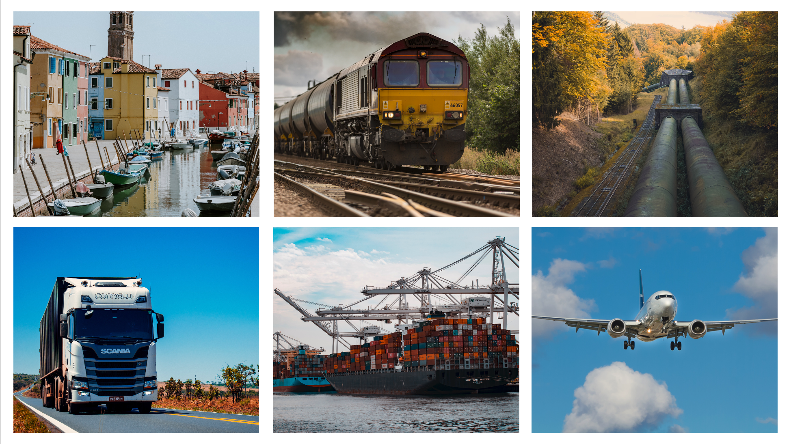

TRANSPORTATION

Transportation can be defined as the process of moving people or goods from one place to another.
TYPES OF TRANSPORTATION
-
Road Transportation:
Involves vehicles like cars, buses, and trucks traveling on roads.
-
Rail Transportation:
Uses trains on tracks to transport passengers and freight.
-
Air Transportation:
Involves aircraft, such as planes and helicopters, for long-distance travel.
-
Water Transportation:
Uses ships, boats, and ferries to move goods and people over water.
-
Pipeline Transportation:
Involves transporting liquids and gases through pipelines.
IMPORTANCE OF TRANSPORTATION
-
Connects producers and consumers, enabling the exchange of goods.
-
Supports industries by improving access to markets and resources.
-
Allows people to travel for work, education, and leisure.
-
Links urban and rural areas, fostering social interactions.
-
Ensures quick access for medical, fire, and police assistance.
-
Provides access to destinations, boosting local economies.
-
Facilitates the movement of people and ideas between regions.
ADVANTAGES AND DISADVANTAGES OF TRANSPORTATION
every means of transportation comes with its own risks and hazards and their benefits.
ROAD TRANSPORTATION
ADVANTAGES OF ROAD TRANSPORTATION
-
Allows direct routes and quick scheduling.
-
Reaches remote areas not served by other modes.
-
Delivers goods straight to the destination.
-
Ideal for local deliveries and travel.
-
Different vehicle options for various cargo needs.
-
Requires less investment in fixed infrastructure compared to rail.
DISADVANTAGES OF ROAD TRANSPORTATION
-
Often faces delays due to heavy traffic.
-
Higher risk of accidents compared to other modes.
-
Contributes to air pollution and greenhouse gas emissions.
-
Quality of roads can affect travel safety and speed
-
Cannot carry as much cargo as trains or ships.
-
Fluctuating fuel prices can increase operational costs.
AIR TRANSPORTATION
ADVANTAGES OF AIR TRANSPORTATION
-
Fastest mode for long-distance travel and delivery.
-
Connects remote locations and international destinations.
-
Strict security measures enhance safety for passengers and cargo.
-
Ideal for urgent shipments, like perishable goods.
-
Provides a comfortable travel experience with amenities.
-
Significantly cuts down the time for long journeys.
DISADVANTAGES OF AIR TRANSPORTATION
-
Expensive operational and ticket prices.
-
Flights can be delayed or canceled due to weather.
-
High-level security checks can be inconvenient.
-
Less space for cargo compared to ships and trucks.
-
Significant emissions contributing to climate change.
-
Although rare, accidents can be catastrophic.
WATER TRANSPORTATION
ADVANTAGES OF WATER TRANSPORTATION
-
Economical for transporting large quantities.
-
Can accommodate heavy and oversized cargo.
-
Produces fewer emissions than other modes.
-
Generally safer for transporting hazardous materials.
-
Suitable for various cargo types, including liquids and containers.
-
Ideal for intercontinental shipping.
DISADVANTAGES OF WATER TRANSPORTATION
-
Generally the slowest mode of transport.
-
Can be delayed by storms or rough seas.
-
Restricted to ports and waterways, not directly accessible.
-
Significant investment in ships and port facilities.
-
Requires additional handling at ports, increasing time and cost.
-
Oil spills and waste can harm marine environments.
RAIL TRANSPORTATION
ADVANTAGES OF RAIL TRANSPORTATION
-
Reduces shipping costs for heavy goods.
-
Produces lower emissions per ton-mile.
-
Can carry large volumes of cargo at once.
-
Offers predictable delivery times with fixed schedules.
-
Lower accident rates compared to road transport.
-
Reduces the number of trucks on the road.
DISADVANTAGES OF RAIL TRANSPORTATION
-
Limited to established tracks, reducing flexibility.
-
Expensive to build and maintain rail infrastructure.
-
Generally slower than air transport for long distances.
-
Can be affected by adverse weather conditions.
-
Schedule disruptions can occur due to technical issues.
-
Not all areas are served by rail networks.
PIPELINE TRANSPORTATION
ADVANTAGES OF PIPELINE TRANSPORTATION
-
Transports liquids and gases continuously with minimal interruption.
-
Lower accident rates compared to other transport methods.
-
Lower operational costs after initial installation.
-
Requires less surface area than road and rail.
-
Often underground, reducing surface disruption.
-
Provides a steady flow of resources like oil and gas.
DISADVANTAGES OF PIPELINE TRANSPORTATION
-
Expensive to install and maintain pipelines.
-
Mostly suitable for liquids and gases only.
-
Risk of leaks and environmental damage.
-
Subject to strict regulations and oversight.
-
Fixed routes limit adaptability to changing demand.
-
Susceptible to damage from earthquakes or landslides.
.